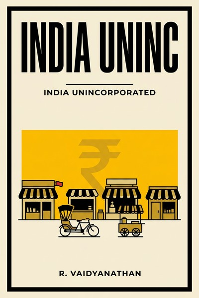

Library › Money & Finance
India Unincorporated: The Untold Story of India's Invisible Entrepreneurs — Summary & Key Lessons

Half of India's economy never shows up in a boardroom: the kirana, the workshop, the trader, the farmer-entrepreneur. This is their hidden balance sheet.
📖 OPEN THE FULL INTERACTIVE BREAKDOWN →🌐 Read it in Hindi, Hinglish, Gujarati, Tamil & 22 more languages — free, with audio.
💡 The Big Idea
Vaidyanathan argues that India's economy is misunderstood because its largest sector, the unincorporated ('India Uninc'), is invisible in corporate data: proprietorships, partnerships, self-employed professionals, farmers and traders who own their means of work. His claims: the unorganized sector contributes a massive share of national income (survey estimates commonly put it near half), provides self-employment (dignity) rather than wage employment, survived 2008 better than corporate India because of low leverage and flexible costs, and is financed by community networks and informal credit more than banks. The book challenges corporate-centered policy (labor laws written for firms that employ few, credit flowing to big industry while the majority pays informal rates) and reads as the economy-side counterpart to the 'next billion users' product playbooks.
🧠 The 8 Key Lessons
Lesson 1: The Ownership Economy Is the Base Economy
Who Is India Uninc
The unincorporated sector (own-account workers, micro-proprietors, farmers, traders, professionals) constitutes the majority of India's enterprises and, by survey-based estimates, close to half of national output. Its defining feature is ownership of work: the barber, the kirana owner, the artisan owns her tools and her risk. Any product, credit or policy design that treats this majority as 'informal labor waiting for jobs' misreads the market's actual structure.
📖 Example: Vaidyanathan's recurring comparison: corporate India employs a few crores at most, while self-employment spans hundreds of millions; policies written for the formal few systematically miss the many. Read the full example →
⚡ Do this: If you build for India, size your market by proprietor counts, not corporate employment. The ownership economy is the default, not the edge case.
Lesson 2: Self-Employment Is Dignity, Not Underemployment
Why They Refuse Salaries
The book reframes self-employment as a choice of autonomy (own boss, community standing, family work units) rather than failed job-seeking. This dignity motive explains behaviors policy finds puzzling: rejecting steady wages, staying in family trades, resisting formalization that removes control. Products that honor the autonomy motive (flexible credit, ownership tools) beat products that treat the customer as labor-in-waiting.
📖 Example: Profiles of traders and artisans show sons returning from cities to family businesses when the business gains a digital payment trail and formal credit access: autonomy plus modern tools is the actual aspiration. Read the full example →
⚡ Do this: Interview five self-employed customers: ask why they never took the job they were offered. Design your product's voice around autonomy ('you own this'), not employment ('we train you').
Lesson 3: Low Leverage Is Why India Didn't Break in 2008
The Anti-Fragile Base
While Western economies collapsed on household and bank leverage, India's mass base (self-employed, low-debt, family-labor, cash-flexible) adjusted by working harder and cheaper without default cascades. Vaidyanathan's thesis: the unincorporated sector's balance sheets (small fixed costs, family labor, community credit) are structurally anti-fragile. The uncomfortable corollary: the sector absorbed the shocks silently, without stimulus, because it was never leveraged into the system that broke.
📖 Example: Comparisons of 2008-09 show unincorporated trade and services contracting briefly and recovering fast, while leveraged corporates and banks required rescues; the sector with no lobbyists needed none. Read the full example →
⚡ Do this: Run your own venture at the unincorporated sector's discipline: fixed costs you can halve in a bad quarter, no leverage that forces refinancing in a crisis.
Lesson 4: Community Networks Are the Real Banks
Chit Funds and Rotating Credit
India Uninc finances itself through community structures: chit funds, rotating savings, caste and community lending networks, supplier credit. These are not 'financial exclusion', they are alternative inclusion with enforcement through reputation. The design lesson for fintech: replicate the trust mechanics (small groups, reputation, flexible schedules) rather than parachuting collateral-based products into networks that already work.
📖 Example: Chit funds mobilize savings for millions of small traders at rates and flexibility banks do not offer, and their default rates embarrass formal lenders, because the underwriter is social standing. Read the full example →
⚡ Do this: Study one informal credit mechanism your customers already use. Copy its trust architecture (group size, schedule, consequences) into your product instead of fighting it.
Lesson 5: Labor Laws Protect Jobs That Barely Exist
The Missing Formal Sector
India's labor code complexity (dozens of laws, schedules, approvals) applies to the organized sector that employs a small fraction of workers, pushing firms to stay small or stay informal, while the unincorporated majority lives outside protection entirely. The reform insight: regulation that only the biggest can comply with creates a bimodal economy (giants and micro, nothing between). Builders should assume the 'missing middle' firm is a policy artifact, not a cultural choice.
📖 Example: The book cites how factories stay below threshold employment sizes to escape act applicability, so India has millions of tiny firms and notable giants but few mid-size manufacturers, the exact shape the thresholds predict. Read the full example →
⚡ Do this: If your platform touches employment, design for the missing middle: compliance tools that make formalization cheaper than evasion for a 20-person firm.
Lesson 6: Savings Live in Gold and Land for Good Reasons
Why They Don't Buy Mutual Funds
The unincorporated saver holds gold, land and inventory, assets policymakers dismiss as unproductive. Vaidyanathan explains the logic: these assets need no paperwork, are understood, are collateralizable in community networks, and survive institutional distrust (bank holidays, co-operative collapses). Financial products win this base by matching those properties (liquidity, tangibility, no-jargon), not by lecturing.
📖 Example: After the PMC Bank co-operative failure froze depositors (our linked case study), the households that 'wasted' money on gold were the diversified ones; the lesson about trust concentration in institutions writes itself. Read the full example →
⚡ Do this: Audit your financial product's assumptions: does it require trust in an institution your customer has seen fail? Add a tangible, self-custodied or diversified anchor before selling the yield.
Lesson 7: Formalization Must Pay the Formalizer
Digital and the New Incentives
The book's practical turn: informal players formalize when formal status pays (credit access, digital rails, larger markets), not when coerced. UPI's later explosion validated the thesis: adoption followed utility for the small trader (free, instant, universal), and formal digital trails created credit histories that unlocked working capital. Align incentives and formalization happens by attraction.
📖 Example: A street vendor's QR code became a credit file: digital receipts turned into loan eligibility, which turned into inventory, which turned into income, the formalization loop the entire book argues for. Read the full example →
⚡ Do this: Design your onboarding so the FIRST formal artifact (receipt, invoice, digital trail) grants the user something tangible within a week. Formalization must bribe, politely.
Lesson 8: Respect the Base: Products for the Proprietor Economy
The Market the Many Were Waiting For
The closing argument: the biggest untapped product market in India is tools for the unincorporated proprietor (payments, credit, inventory, insurance, legal) designed at their price points and trust levels. Every global template (SMB SaaS, POS finance, community banking) has a desi-scale opportunity beneath it. The respect shown in design detail is what separates products adopted by the base from products sold at it.
📖 Example: The winners in small-trader tech (simple-ledger apps that later carried lending) succeeded exactly because they respected existing behavior (the bahi-khata) and digitized it instead of replacing it. Read the full example →
⚡ Do this: Pick the ledger, logbook or diary your customer already keeps. Digitize THAT, in their language, before offering them anything new to learn.
✅ 5-Step Action Plan
- Size your India market by proprietor counts, never by corporate employment.
- Build products that honor autonomy: the customer owns the outcome, you provide the tool.
- Copy community credit's trust architecture instead of fighting informal finance.
- Anchor financial products with tangible or self-custodied elements customers trust.
- Digitize the ledger your customer already keeps before teaching anything new.
⚠️ When This Doesn't Work
Vaidyanathan writes as an advocate for the unincorporated sector: share estimates rest on survey extrapolations that are contested and aging, and the policy positions (against certain labor formalizations, critical of large-corporate bias) are argued one-sidedly by design. The book predates UPI's full explosion; later data strengthens some claims and complicates others. Read it as a lens correction for corporate-centric thinking, not as a statistical sourcebook.
💀 The Graveyard Proves It
🏦 PMC Bank — The ₹4,355 Crore Scam in a 'Safe' Cooperative Bank. Burn: ₹4,355 crore hidden in one borrower's account; 1.2M depositors trapped. Read the full case study →
💬 Best Quotes from India Unincorporated: The Untold Story of India's Invisible Entrepreneurs
- “India is not a nation of companies. It is a nation of proprietors.”
- “The self-employed do not want jobs. They want working capital and dignity.”
- “The sector that survived 2008 without bailouts was never invited to the table that got bailed out.”
Interactive version: mark lessons as read, listen in your language, share quote cards.